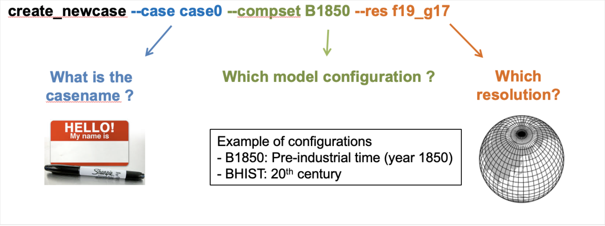

Your first CESM run
Contents
Your first CESM run#
This is a very quick introduction to running the climate model CESM. It will guide you through the basics of running CESM.
Today, we will run a simulation. Tomorrow, we will look at the data you produced.
1. Creating a CESM case#
CESM experiments start with creating a case with a specific configuration of CESM (compset) and at a particular resolution.
For instance, here is the command to create a CESM case called case0 with
- compset: B1850
- resolution: f19_g17

Exercise 1#
Create and run a B1850 case at f19_g17 resolution, calling your case ‘case01’:
 Solution to Exercise 1
Solution to Exercise 1
create_newcase –case case01 –compset B1850 –res f19_g17
Great! You’ve created the default version of your case. Let’s wait for everyone before going to step 2.
2. Setting up the case
The next step in running CESM is to setup the case. This is done by going into the case you just created and running ./case.setup.
The command ./case.setup sets up files that control the model’s behavior.
Exercise 2#
Customize the cell below with your own case name. Then run the cell. This sets up the case.
cd case0
./case.setup
Great! You’ve now used the case.setup command to set up your case. Let’s wait for everyone before going to step 3.
3. Compiling the case#
(need to fill in a lot more!)
Exercise 3#
Run the cell below. This compiles the case. Be aware that this can take a few minutes.
qcmd -- ./case.build
Again, this will take a few minutes. You’ll know this is complete when you see the line:
MODEL BUILD HAS FINISHED SUCCESSFULLY
If you see that, fantastic! You’ve built your first CESM case! Let’s wait for everyone before going to step 4.
4. Running your case#
Running a case is also simple - we just issue the case.submit command. This will start by checking that we have all of the necessary input data for our run, and downloading whatever is missing, and then it will perform the actual simulation - which we’ve configured to run for one month.
Exercise 6#
Submit your simulation. Run the cell below.
./case.submit
Well done. You are now running your first CESM simulation. We will look at the results of your simulation shortly.